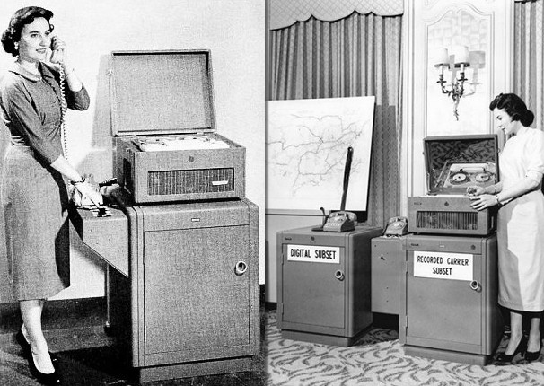
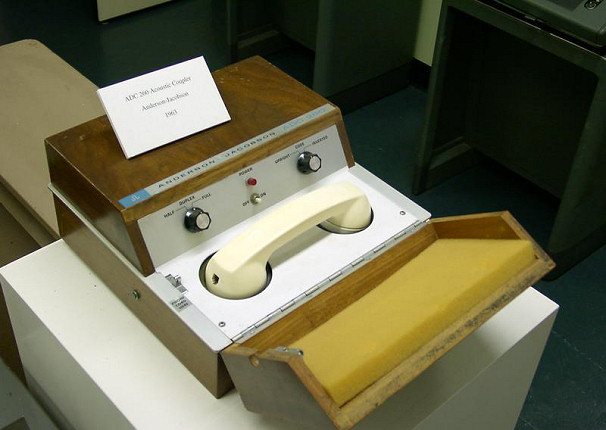

WHEN?
the idea of modem at first came from the telephotography machines(predecessors of modern fax machines) during the 1930s and it helped lead to improve the signal impairment in telephone circuits. While these developments going, translating fax signals reach1,800-hertz carrier signal can be transmitted over the telephone line.
The telephotgraphy machines had a role in inventing the first digital modemin the 50s for military use by the where it connects airbases and controls centers. Followed by the fist commercial modem available in the United States in 1962 by the American Telephone and Telegraph company

in 1977, the world's first PC modem has been created by Dale Heatherington and Dennis Hayes, which offers great features at that time. One of them is connecting it directly to the telephone.
| Year | The Developement |
|---|---|
| 1950 | The first digital modem has been created which transmits data for North America air defense during the 1950s | 1962 | The first commercially made modem released in the USA |
| 1980 | A modem introduced which would permit full-duplex data transmission operable through the PTSN |
| 2000 | Modems were adopted by the ITU after improvement in the PTSN |